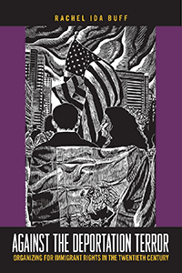

<body bgcolor="#FFFFFF" text="#000000" link="#0000FF" vlink="#CC0000" alink="#CC0000"><center><hr width="350" size="1" align="center" noshade>Reveals the formerly little-known history of multiracial immigrant rights organizing in the United States<hr width="350" size="1" align="center" noshade><p><a href="https://cdcshoppingcart.uchicago.edu/Cart/ChicagoBook.aspx?ISBN=&&PRESS=temple" target="_top">Buy this book!</a> | <a href="https://cdcshoppingcart.uchicago.edu/Cart/Cart.aspx?PRESS=temple" target="_top">View Cart</a> | <a href="https://cdcshoppingcart.uchicago.edu/Cart/Cart.aspx?PRESS=temple" target="_top">Check Out</a></p><p></p></center><!--none//--><h1 class = "booktitle">Against the Deportation Terror</h1> <h1 class = "subtitle">Organizing for Immigrant Rights in the Twentieth Century</h1>
<h3>Rachel Ida Buff </h3>
paper: $29.95, Nov 17<BR>EAN:&nbsp;978-1-4399-1534-9<BR><font color=#990033>Not Yet Published Preorder</FONT><font size=-7><br>&nbsp;</font></p><p class="info">cloth: $104.50, <BR>EAN:&nbsp;978-1-4399-1533-2<BR><font color=#990033>Not Yet Published Preorder</FONT><font size=-7><br>&nbsp;</font></p><p class="info">e-book: $29.95, <BR>EAN:&nbsp;978-1-4399-1535-6<BR><font color=#990033>Not Yet Published Preorder</FONT><font size=-7><br>&nbsp;</font></p></p></td></tr></table>
<BR> <p class="info">282 pp<BR> 6 x 9<BR> 3 figs., 18 halftones, 1 maps <p class="info"><font size=-7>&nbsp;</font></p><p class="info">
</P><BLOCKQUOTE></BLOCKQUOTE>
<p>Despite being characterized as a "nation of immigrants," the United States has seen a long history of immigrant rights struggles. In her timely book <i>Against the Deportation Terror</i>, Rachel Ida Buff uncovers this multiracial history. She traces the story of the American Committee for the Protection of the Foreign Born (ACPFB) from its origins in the 1930s through repression during the early Cold War, to engagement with "new" Latinx and Caribbean immigrants in the 1970s and early 1980s.<br/><br/>Functioning as a hub connecting diverse foreign-born communities and racial justice advocates, the ACPFB responded to various, ongoing crises of what they called "the deportation terror." Advocates worked against repression, discrimination, detention, and expulsion in migrant communities across the nation at the same time as they supported reform of federal immigration policy. Prevailing in some cases and suffering defeats in others, the story of the ACPFB is characterized by persistence in multiracial organizing even during periods of protracted repression.<br/><br/>By tracing the work of the ACPFB and its allies over half a century, <i>Against the Deportation Terror</i> provides important historical precedent for contemporary immigrant rights organizing. Its lessons continue to resonate today.<br>
<P CLASS="top"><A HREF="#top">BACK TO TOP</A></P>&nbsp;
<BR>&nbsp;
&nbsp;<P>
</P><BR>&nbsp;
<H2 class="inpageheading"><A NAME="author bio"></a>About the Author(s)</H2><p><b>Rachel Ida Buff</b> is Professor of History and Coordinator, Comparative Ethnic Studies at the University of Wisconsin-Milwaukee. She is the editor of <i> Immigrant Rights in the Shadows of Citizenship</i> and the author of <i>Immigration and the Political Economy of Home: West Indian Brooklyn and American Indian Minneapolis, 1945</i>- <i>1992</i>.<br>
<P CLASS="top"><A HREF="#top">BACK TO TOP</A></P>
<p><h2 class="inpageheading"><a name="subjects"></a>Subject Categories</h2> <p><a href="http://www.temple.edu/tempress/history.html" target="_top">History</a> <br><a href="http://www.temple.edu/tempress/immigration.html" target="_top">Immigration</a> <br><a href="http://www.temple.edu/tempress/labor.html" target="_top">Labor Studies and Work</a> <br><a href="http://www.temple.edu/tempress/social.html" target="_top">Community Organizing and Social Movements</a> <br><a href="" target="_top"></a> </p>
</p>
<P>
<h2 class="inpageheading">In the Series</h2>�
<p>�<a target="_top" href="http://www.temple.edu/tempress/insubordinate_spaces.html" OnMouseOver="window.status='Click for other books in this series!';return true;"OnMouseOut="window.status=" ><i>Insubordinate Spaces</i></a></P>
<p><p>
The<em> Insubordinate Spaces </em>series, edited by George Lipsitz, is a home for books that resist and rethink the increasingly outsized power market forces wield over public and private life and over the rules and assumptions of scholarly investigation and discourse. The series seeks to explore the origins and evolution of these contemporary and historical subordinating institutions and practices, as well as emergent insubordinate social spaces and institutions crafted to resist market imperatives and provide alternatives to them in the form of new publics, new polities, and new politics.
</p></P>
�</P>��
</P>
<p align="center"><a href="https://cdcshoppingcart.uchicago.edu/Cart/ChicagoBook.aspx?ISBN=&&PRESS=temple" target="_top">Buy this book!</a> | <a href="https://cdcshoppingcart.uchicago.edu/Cart/Cart.aspx?PRESS=temple" target="_top">View Cart</a> | <a href="https://cdcshoppingcart.uchicago.edu/Cart/Cart.aspx?PRESS=temple" target="_top">Check Out</a></p><p><font face="Arial" size="1"><a href="copyright.html" onMouseOver="window.status='Web Copyright Policy';return true;" onMouseOut="window.status=''" title="Web Copyright Policy">&copy;</a> 2018 <a href="http://www.temple.edu" target="new" onMouseOver="window.status='Link to Temple University home page';return true;" onMouseOut="window.status=''" title="Link to Temple University home page">Temple University</a>. All Rights Reserved. http://www.temple.edu/tempress/titles/2469_reg.html</font></p>